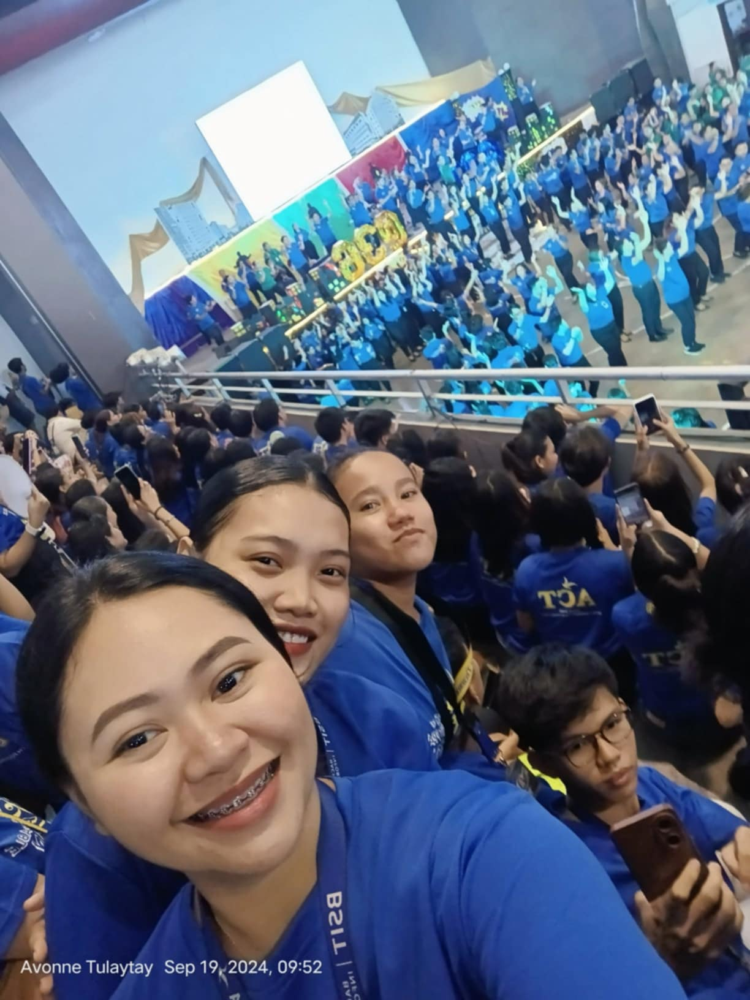
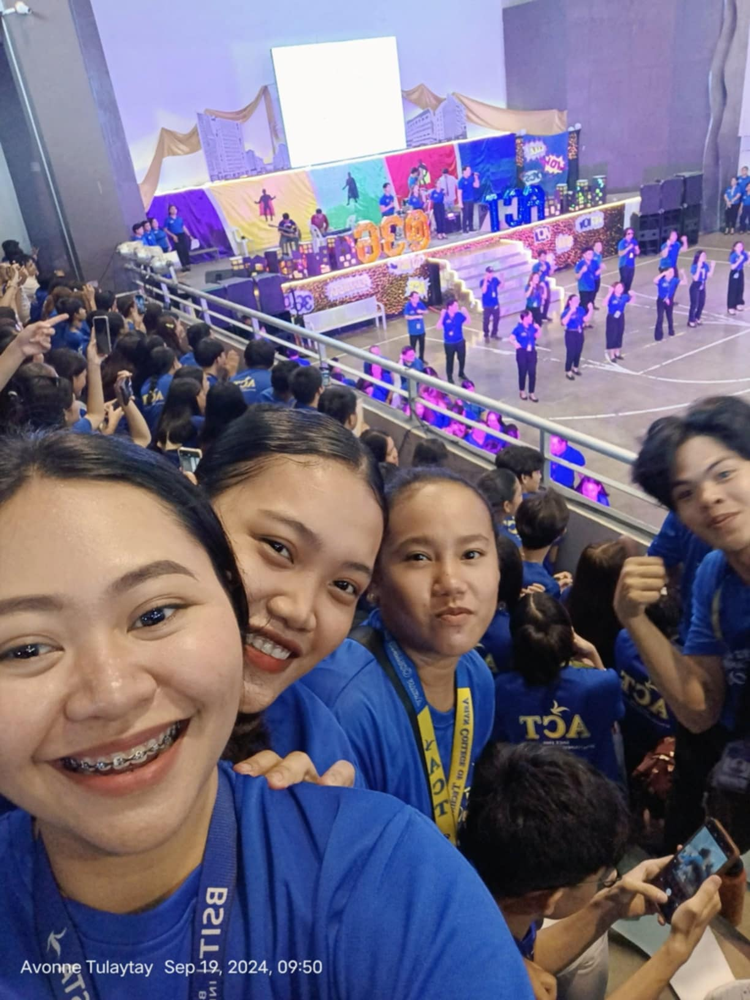
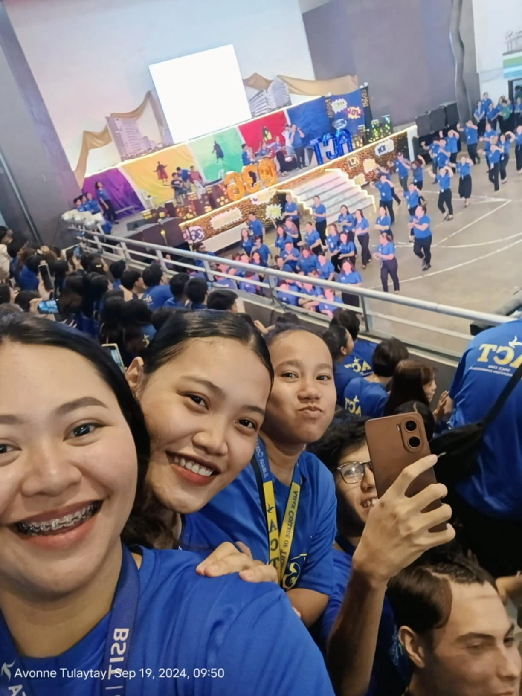
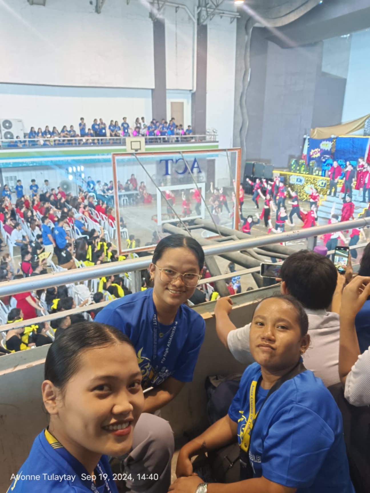

Welcome to my Diary
Revisit the moments of my thrilling day at college through a collection of photos and narratives. Come along as I share the standout experiences, obstacles, and enjoyable times from this memorable adventure.
Diary

Foundation Day honors a school's legacy through celebrations, performances, and community engagement.

Foundation Day celebrates a school's history and achievements with speeches, performances, and awards, fostering pride and unity among the community.

Foundation Day is like a birthday party for the school, filled with cheers, performances, and a whole lot of pride! 🎉

Foundation Day celebrates a school's founding with events that unite students, faculty, and the community.